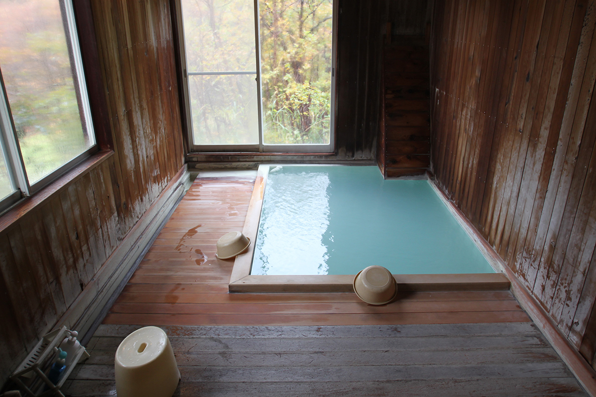
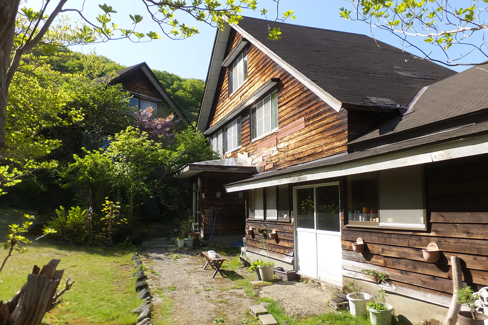
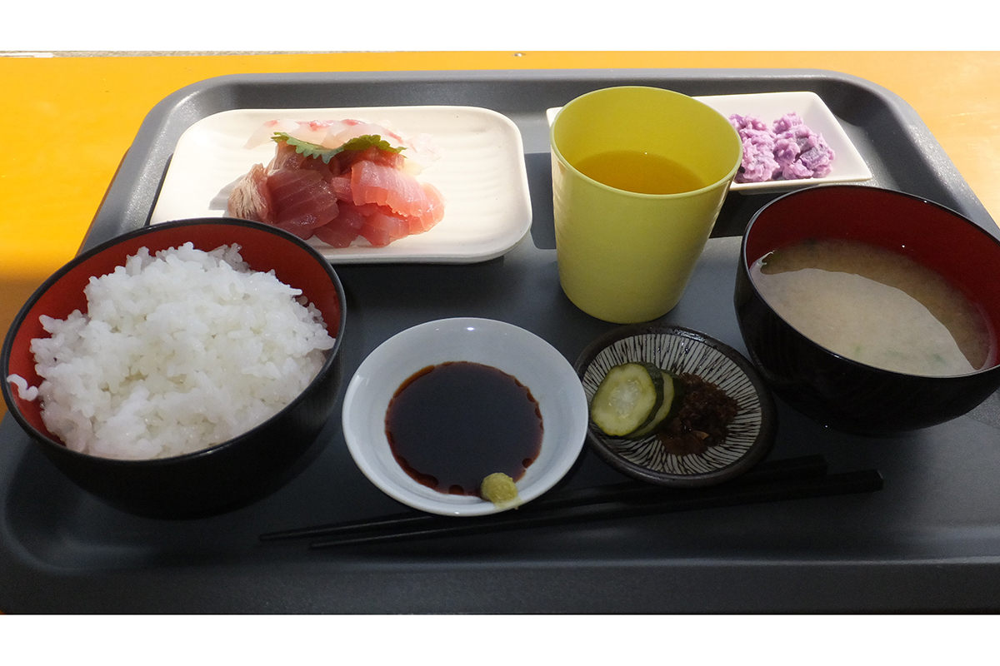

Префектура Фукусима · Фукусима · онсэн
Онсэн Такаю: сернистая вода, в которой гвоздь не ржавеет месяцами

По содержанию серы онсэн Такаю входит в число самых богатых источников Японии. Профессор, который больше сорока лет изучает японские онсэны, считает его воду одной из самых сильных в стране и проверил это опытом с обычным гвоздём.
Онсэн
«Кусацу Тохоку»
Онсэн Такаю лежит на территории города Фукусима. Серы в здешней воде так много, а целебная слава так велика, что Такаю издавна называют «Кусацу Тохоку», по имени знаменитого сернистого курорта в префектуре Гумма. Сам профессор признаётся, что по действию воды ставит Такаю даже выше Кусацу.
Здесь около десяти рёканов. Рёкан «Адатия» работает с 1607 года, начала эпохи Эдо. Рёкан «Тамагою» открылся в 1868 году, в первый год эпохи Мэйдзи; есть и «Адзумая», и другие. В Такаю сохранилась атмосфера старины, и здесь можно попробовать тодзи, неспешное лечение водой, каким его знали прежде.
Опыт
Гвоздь в бутылке
Все купальни общественной бани «Аттака-ю» устроены под открытым небом. Стоит один раз окунуться, и становится ясно, что вода здесь необычная. Профессор с коллегами провёл химические анализы и опыты с добровольцами, и Такаю показался им одним из самых сильных онсэнов Японии.
Один из опытов был совсем простым. В три пластиковые бутылки налили водопроводную воду, минеральную воду и воду источника Таки-но ю, который питает «Аттака-ю», в каждую положили по гвоздю и закрыли крышки. На четвёртый день в водопроводной и минеральной воде гвозди заметно заржавели. В воде Такаю ржавчины не появилось и через два с половиной месяца. Профессор объясняет это редкой антиокислительной силой источника.
Рёкан
«Сэйсин сансо»: четыре комнаты у самого источника
Из рёканов Такаю профессор выбирает «Сэйсин сансо». На участке около 1,3 гектара всего четыре комнаты. Это ближайший к источнику рёкан, и вода в нём чуть прохладнее, чем у соседей, поэтому профессор особенно советует его пожилым гостям и тем, кто любит неспешно сидеть в тёплой, а не горячей воде.

Баня целиком деревянная, в ней по одной ванне для мужчин и для женщин. В ванну тихо и без остановки течёт сернистая вода молочного цвета с голубым оттенком, от которой трудно отвести глаза. Для тех, кто любит купаться в одиночестве, лучше обстановки не найти. Купальни под открытым небом здесь нет, но и в крытой бане ощущение, будто сидишь на воздухе.
Рёкан ведут вдвоём муж и жена. У домашней кухни хозяйки много постоянных поклонников.

Проживание с завтраком и ужином в 2024 году стоило от 10 600 иен с налогом и сервисом, купание без ночёвки 500 иен. Для гостей есть кухня, прачечная и Wi-Fi. Вода в рёкане сернистая, на выходе из земли около 43,8 °C, и подаётся в ванны прямо из источника.
«Сэйсин сансо»
- Адрес
- префектура Фукусима, Фукусима, Матинивасака, Юбанадзава, 1-15
- Телефон
- +81 24-591-1129
- Цены / Вход
- с завтраком и ужином от 10 600 иен с налогом и сервисом; купание без ночёвки 500 иен
- Заезд / выезд
- 14:00 / 10:00